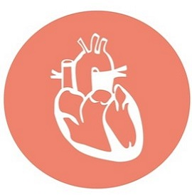

<!Doctype html>
<html><head>
<title>Hospital</title>
	<meta charset="utf-8">
		<meta name="viewport" content="width=device-width, initial-scale=1.0, maximum-scale=1.0, user-scalable=no">
		<link rel="stylesheet" href="includes/css/bootstrap.min.css">
		<link rel="stylesheet" href="includes/css/bootstrap.css">
		<link rel="stylesheet" href="includes/css/style.css">
		<script src="includes/js/modernizr-2.6.2.min.js"></script>
	</head>
  <body>
    <main class="container" id="main">
      <div class="navbar navbar-fixed-top navbar-default" role="navigation">
        <div class="container">
  <!-- .btn-navbar is used as the toggle for collapsed navbar content -->
          <header class="navbar-header">
			      <button class="navbar-toggle collapsed" data-target=".navbar-responsive-collapse" data-toggle="collapse" type="button">
				      <span class="icon-bar"></span>
				      <span class="icon-bar"></span>
			    	  <span class="icon-bar"></span>
			      </button>
			      <a href="index.html" class="navbar-brand">
				      <span class="logo">MyHospital</span>
			      </a>
          </header>
<nav class="navbar-collapse collapse navbar-responsive-collapse">   <!-- navbar-responsive-collapse -->
            <ul class="nav navbar-nav navbar-right">
              <li class="active"><a href="index.html">Home</a></li>
               <li><a href="portfolio.html">Portfolio</a></li>
               <ul class="nav navbar-nav pull-right">
							<li class="dropdown">
					<a href="#" class="dropdown-toggle" data-toggle="dropdown"><span class="glyphicon glyphicon-user"></span>Anifa Gopu<strong class="caret"></strong></a>
					<ul class="dropdown-menu">
					<li><a href="#"><span class="glyphicon glyphicon-wrench"></span> Settings</a></li>
          <li><a href="#"><span class="glyphicon glyphicon-refresh"></span> Update Profile</a></li>
          <li><a href="#"><span class="glyphicon glyphicon-briefcase"></span> Billing</a>
					</li><li class="divider"></li>
					<li><a href="#"><span class="glyphicon glyphicon-off"></span> Sign out</a></li>
					</ul></li>	</ul>
            <form action="#" class="navbar-form form-horizontal pull-left" >
              <input type="text" id="searchInput" class="form-control" placeholder="Search this site...">
              <button type="submit" class="btn btn-primary"><span class="glyphicon glyphicon-search"></span></button>
            </form> <!-- end navbar-form -->
					</nav><!-- end navbar-collapse -->
        </div> <!-- end container -->
      </div> <!-- end navbar -->
			<div class="jumbotron">
			<div class="row" id="bigcallout">
      <div class="col-12">
						<!-- Visible only on small devices -->
			<div class="well well-small visible-sm">
		  <a href="" class="btn btn-large btn-block btn-default"><span class="glyphicon glyphicon-phone"></span>give your feedback</a>
			</div><!-- end well-small -->
			<div class="well">
			<div class="page-header">
			<h1>All Serving Your Needs with<small>Love & Care</small></h1>
			</div><!-- end page-header -->
<p class="lead">Our doctor services section provides various tools for managing the requirements of doctors on a daily basis. Doctors can view, update and cancel specific appointments as required based on their needs</p>
<a href="#" class="btn btn-danger btn-primary" id="alertMe">Click here to know more</a>
<a href="" class="btn btn-large btn-link">or sign in</a>
											</div><!-- end well -->
						      	</div>
									</div><!-- end row -->
								</div><!--end bigcallout-->
							</div><!--end jumbotron-->
							<div class="row" id="moreInfo">
				<div class="col-sm-6">
					<h3>Centers OF excellence</h3>
						<div class="tabbable">
							<ul class="nav nav-tabs">
								<li class="active"><a href="#tab1" data-toggle="tab">Location</a></li>
								<li><a href="#tab2" data-toggle="tab">Know More</a></li></ul>
					<section class="tab-content">
						<div class="tab-pane active" id="tab1">
							<h4><span class="glyphicon glyphicon-map-marker"></span> Our Location <small>More like our hospital</small></h4>
							<iframe src="https://www.google.com/maps/embed?pb=!1m18!1m12!1m3!1d3806.9356574211965!2d78.41015161417695!3d17.414875206597205!2m3!1f0!2f0!3f0!3m2!1i1024!2i768!4f13.1!3m3!1m2!1s0x3bcb96c8db2df393%3A0xfb2d302be3c6df60!2sApollo+Health+City+Hospital+Hyderabad!5e0!3m2!1sen!2sin!4v1469258404886" width="100%" height="200" frameborder="0" style="border:0" allowfullscreen></iframe>
							<br><br>
							<!-- <article> -->
								<p align="justify">Along with excellence the Apollo philosophy rests on the pillars of technological superiority, a warm patient- centric approach, and a edge in forward-looking research.
									 Apollo's spectacular success rests on sustained commitment and investments in each of these pillars.</p>
									<p align="justify">Apollo Hospitals is widely recognized as the pioneer of private healthcare in India, and was the country’s first corporate hospital.
											The Apollo Hospitals Group, which started as a 150-bed hospital and today, operates 9215 beds across 64 hospitals. A forerunner in
											integrated healthcare, Apollo has a robust presence across the healthcare spectrum. The Group has emerged as the foremost integrated
											healthcare provider in Asia, with mature group companies that specialize in insurance, pharmacy, consultancy, clinics and many such
												key touch points of the ecosystem.The Apollo Group has touched the lives of over 45 million patients, from 121 countries.
										</p>	</div><!-- end tab-pane -->
										<div class="tab-pane" id="tab2">
							<h4>More information about <small>MyHospital</small></h4>
								<p align="justify">Apollo Hospitals has always strongly believed in social initiatives that help transcend barriers. In keeping with this, the group has started several impactful programmes in this area.
									One among these initiatives is SACHi (Save a Child’s Heart Initiative) - a community service initiative with the aim of providing quality paediatric cardiac care to children from underprivileged sections of society suffering from heart diseases.</p>
										<p align="justify">
										 One among these initiatives is SACHi (Save a Child’s Heart Initiative) - a community service initiative with the aim of providing quality
										 paediatric cardiac care to children from underprivileged sections of society suffering from heart diseases. Apollo also runs the
										 SAHI (Society to Aid the Hearing Impaired) initiative to help poor children with hearing impairment, and the CURE Foundation which is
										  focused on cancer screening, cure and rehabilitation for those in need. In the area of Cancer care Apollo has also joined hands with
											 Yuvraj Singh's YOUWECAN to organize large-scale cancer screenings. Apollo regularly conducts comprehensive health screening camps across the nation.
										  The Group runs the incredible successful Billion Hearts Beating campaign – a nationwide programme that has awakened India to heart healthiness	</p>
<a href="#myModal" role="button" class="btn btn-warning" data-toggle="modal"><span class="glyphicon glyphicon-hand-up"></span> Click for a Modal Window!</a>
							<div class="modal fade" id="myModal">
							<div class="modal-dialog">
						<div class="modal-content">
						<div class="modal-header">
						<button class="close" data-dismiss="modal">&times;</button>
						<h4 class="modal-title">A Modal Window</h4>
						</div><!-- end modal-header -->
						<div class="modal-body">
						<h4>Welcome To Apollo</h4>
<h4>Registration</h4>
<a href="" data-original-title="Tooltip" rel="tooltip">sign up </a>
<form class="form-horizontal">
	<div class="form-group">
<label class="col-lg-2 control-label" for="inputName">Name</label>
<div class="col-lg-10">
		<input class="form-control" id="inputName" placeholder="Name" type="text">
	</div>
	</div>
<div class="form-group">
<label class="col-lg-2 control-label" for="inputEmail">Email</label>
<div class="col-lg-10">
		<input class="form-control" id="inputEmail" placeholder="Email" type="email">
	</div>
	</div>
	<div class="form-group">
<label class="col-lg-2 control-label" for="inputMessage">Message</label>
<div class="col-lg-10">
<textarea class="form-control" id="inputMessage" placeholder="Message" rows="3"></textarea><br>
<button class="btn btn-success pull-right" type="submit">Send!</button>
	</div>
	</div>
</form>
</div><!-- end modal-body -->
	<div class="modal-footer">
	<button class="btn btn-default" data-dismiss="modal" type="button">Close</button> <button class="btn btn-primary" type="button">Save changes</button>
	</div><!-- end modal-footer -->
	</div><!-- end modal-content -->
	</div><!-- end modal-dialog -->
</div><!-- end myModal -->
	</div><!-- end tab-pane -->
</section><!-- end tab-content -->
	</div><!-- end tabbable -->
	</div><!-- end col-sm-6 -->
<div class="col-sm-6">
							<h3>More about My Hospital</h3>
							<p align="justify">Apollo Hospitals has always strongly believed in social initiatives that help transcend barriers. In keeping with this, the group has started several impactful programmes in this area.
								One among these initiatives is SACHi (Save a Child’s Heart Initiative) - a community service initiative with the aim of providing quality paediatric cardiac care to children from underprivileged sections of society suffering from heart diseases.</p>
									<h4>A List Group</h4>
<section class="list-group">
	<a href="#" class="list-group-item">
	<h4 class="list-group-item-heading">Clinical Excellence</h4>
									<p class="list-group-item-text">
										<p align="justify">
											Over the past three decades Apollo Hospitals' transformative journey has forged a legacy of excellence in Indian healthcare.
											 The Group has continuously set the agenda and led by example in the blossoming private healthcare space. One of Apollo's
											  significant contributions has been the adoption of clinical excellence as an industry standard.Apollo pioneered the concept
												 - the group was the first to invest in the pre-requisites that led to international quality accreditation like JCI and
												 also developed centres of excellence in Cardiac Sciences, Orthopaedics, Neurosciences,
											  Emergency Care, Cancer and Organ Transplantation.	</p></a>
							<a href="#" class="list-group-item">
			<h4 class="list-group-item-heading">Strong value system</h4>
									<p class="list-group-item-text">
									<p align="justify">
											Along with excellence the Apollo philosophy rests on the pillars of technological superiority, a warm
											 patient- centric approach, and a edge in forward-looking research.
											 Apollo's spectacular success rests on sustained commitment and investments in each of these pillars.	</p></a>
	<a href="#" class="list-group-item">
									<h4 class="list-group-item-heading">TLC</h4>
									<p class="list-group-item-text"> Apollo pioneered Tender Loving Care (TLC) and it
										continues to be the magic that inspires hope, warmth and a sense of ease in the patients.
										 Processes are relentlessly improved upon to ensure maximum patient-centricity.	</p></a>
						</section><!-- list-group -->
					</div><!-- end col-sm-6 -->
				</div><!-- end moreInfo -->
 <div class="row" id="featuresHeading">
		 <section class="row" id="showcase-1">
			 <h1 class="name" align="center">OUR EXCELLENCE</h1>
			 <div class="col-xs-12 col-sm-4 col-md-4 showcase_unit">
					 <h1 class="name" align="center">OUR MISSION</h1>
				 <figure>
					 <br><br>
	 			</figure>
				 <p class="description" align="justify">. "Our mission is to bring healthcare of International standards within the reach of every individual. We are committed to the achievement and maintenance of excellence in education, research and healthcare for the benefit of humanity"</p>
 				<button class="btn btn-primary">View More</button>
		 </div>
			 <div class="col-xs-12 col-sm-4 col-md-4 showcase_unit">
					 <h1 class="name" align="center">Emergency</h1>
				 <figure>
					 <br><br>
	 			</figure>
					 <p class="description" align="justify">An easy to remember emergency access number - 1066.Door to triage happens in less than 5 minutes.Access to neurologists, & neurosurgeons within 5 minutes, to assess a strokeDoor to cath lab time in 20 minutes in stroke</p>
					<button class="btn btn-primary">View More</button>
			 </div>
			 <div class="col-xs-12 col-sm-4 col-md-4 showcase_unit">
	 <h1 class="name" align="center"></h1>
				 <figure>
		 <br><br>
	 </figure>
				 <p class="description" align="justify">Our team of cardiologists and cardiothoracic surgeons are trained at the top institutes in India and abroad and they are completely dedicated to the prevention and treatment of cardiac disease</p>
			  <button class="btn btn-primary">View More</button>
			 </div>
		 </section> <!-- end showcase-1 -->
		</div><!-- end features -->
		<section class="row" id="web_insight">
        <div class="col-md-8 col-sm-6 col-xs-12 pull-right" id="web_insight_content">
						<h2>MyHospital</h2>
						<p> Apollo Hospitals is widely recognized as the pioneer of private healthcare in India, and was the country’s first corporate hospital. The Apollo Hospitals Group, which started as a 150-bed hospital and today, operates 9215 beds across 64 hospitals. A forerunner in integrated healthcare, Apollo has a robust presence across the healthcare spectrum. The Group has emerged as the foremost integrated healthcare provider in Asia, with mature group companies that specialize in insurance, pharmacy, consultancy, clinics and many such key touch points of the ecosystem. The Apollo Group has touched the lives of over 45 million patients, from 121 countries.The first Apollo Hospital opened in Chennai, in 1983. It was borne out of the determination to lead a complete transformation in Indian healthcare. Apollo’s Founder Chairman, Dr. Prathap C Reddy was the driving force behind the inception. Credited as the architect of modern Indian healthcare, Dr. Prathap C Reddy started Apollo with the mission of bringing world-class healthcare to India, at a price point that Indians could afford! The backdrop to this development was the hopelessly inadequate healthcare infrastructure prevalent in India, at that time.</p>
         		<button class="btn btn-primary">View More</button>
        </div>
        <div class="col-md-4 col-sm-6 col-xs-12 pull-left" id="web_insight_image">
          
        </div>
      </section> <!-- end web_insight -->

      <section class="row" id="content">
        <div class="col-md-8 col-sm-6 col-xs-12" id="content_content">
					<h2>Dr.Pratap reddy</h2>
				<p>The first Apollo Hospital opened in Chennai, in 1983. It was borne out of the determination to lead a complete transformation in Indian healthcare. Apollo’s Founder Chairman, Dr. Prathap C Reddy was the driving force behind the inception. Credited as the architect of modern Indian healthcare, Dr. Prathap C Reddy started Apollo with the mission of bringing world-class healthcare to India, at a price point that Indians could afford! The backdrop to this development was the hopelessly inadequate healthcare infrastructure prevalent in India, at that time.</p>
          <button class="btn btn-primary">View More</button>
        </div>
        <div class="col-md-4 col-sm-6 col-xs-12" id="content_image">
          
        </div>
      </section> <!-- end content -->
	  <br>
</main> <!-- end main container -->

  <!-- Footer -->
    <footer class="container-fluid">
        <div class="row" id="footer">
    <div class="  col-xs-4 col-sm-4"  id="starwebs">
            	<h4>Patient Care</h4>
		            <ul class="unstyled">
									<li>Find a Doctor</li>
		              <li>Servise Excellence</li>
		              <li>Patient Speak</li>
		            </ul>
</div> <!-- end footer-starwebs -->
<div class=" col-xs-4 col-sm-4 " id="web_design">
            <h4>About</h4>
            <ul class="unstyled">
              <li>Hospitals in india</li>
              <li>International Hospitals</li>
              <li>Apollo Clinics</li>
            </ul>
          </div> <!-- end footer-web_design -->
<div class=" col-xs-4 col-sm-4 " id="likes">
            <h4>Likes</h4>
	            <ul class="unstyled">
								<li><a href="image/twitter.jpg">
								 <li><a href="image/youtube.jpg">Facebook</a></li>
								 <li><a href="image/gmail.jpg">gmail</a></li>
								<li><a href="image/orkut.jpg">orkut</a></li>
	            </ul>
          </div> <!-- end footer-likes -->
					<p>copyrights@apollohospitals all rights reserved</p>
        </div> <!-- end footer-row -->
       <!-- end container -->
    </footer> <!-- end footer -->
    <!-- First try for the online version of jQuery-->
    <script src="../../../code.jquery.com/jquery.js"></script>
    <!-- If no online access, fallback to our hardcoded version of jQuery -->
    <script>window.jQuery || document.write('<script src="includes/js/jquery-1.11.3.min.js"><\/script>')</script>
    <!-- Bootstrap JS -->
    <script src="includes/js/bootstrap.min.js"></script>
  </body>
</html>
